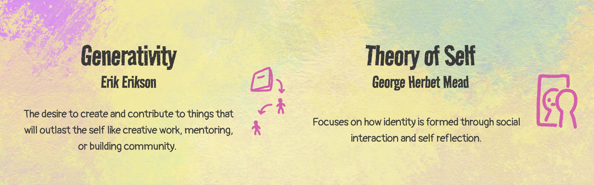
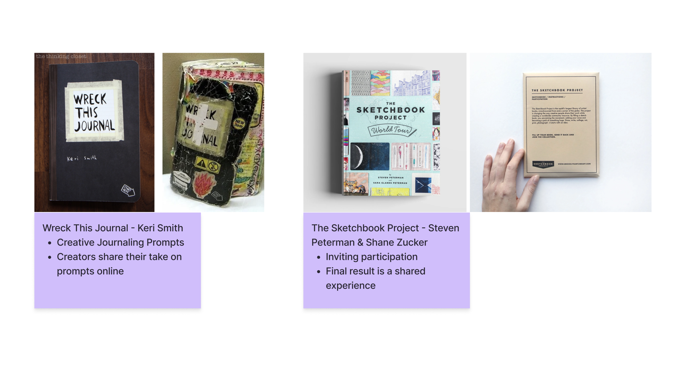
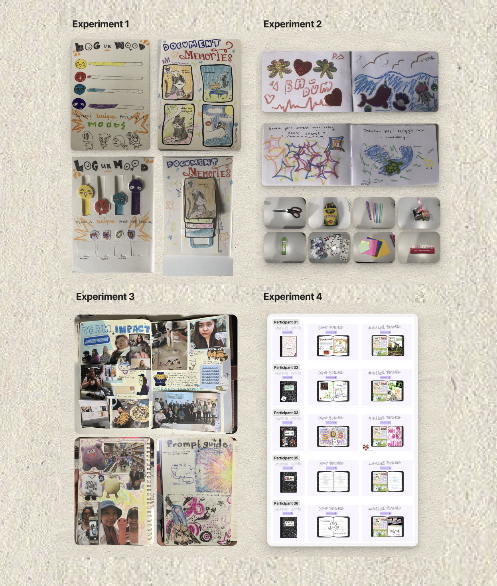

When looking at reflective personal hobbies, I noticed that people tend to gravitate towards digital tools and creation, likely due to their efficiency and accessibility. While the practice of analog creative journaling is not fading, the shift to digital does affect the sense of connection and slowness within the process. To address this, I designed an open, low-effort experience for students to casually explore creative journaling, understand what it can look like for them personally, and observe how others approach the practice.
Solo, Academic Project
8 Weeks
Academic, Solo Project
Interactive Experience, Binded Journal
CHALLENGE
make analog creative journaling feel accessible and interesting
APPROACH
create a low-effort joining experience accessible to anybody. frame it as something without expectations
OUTCOME
How could a tactile experience and maker culture be utilized to encourage engagement with creative journaling?
PROCESS
Research & Insights
To begin research, I looked at what motivates peoople to participate in creative hobbies, and found two key theories : Generativity (Erik Erikson) and Theory Of Self (George Herbet Mead).
KEY INSIGHTS
- People want to create something that can be passed down and exist outside of their time
- People use creative practices to reflect on themselves

Ideation & Inspiration
I looked at some existing work surrounding creative practices, and it's success. Two key projects were 'Wreck This Journal' by Keri Smith and 'The Sketchbook Project' by Steven Peterman & Shane Zucker.
OPPORTUNITIES
- Create an interactive experience that allows users to make something of their own
- Frame the experience as something accessible to all skills

User Experiments
I conducted a series of experiments to test how participants react to different creative settings. Across these experiments, I tested free journaling (no rules), prompted journaling, and time and material constraints.
USER TESTING RESULTS
- People want to have a prompt guide available, but not limiting them
- They want a wide selection of materials to choose from

Visuals & Event Set Up
To test my conclusions, I held an event at MDS, where it would be accessible to anyone. I established a few graphics to set the tone --. I also set up a few response cards for after they complete their spreads.


FINAL OUTCOME
Interactive Experience & Binded Journal
The final outcome was the 'Journal Table' event held at MDS, and with all the spreads submitted by the participants, I binded the final journal.


Reflection
This was my first time holding an event on my own, and I really enjoyed the whole process. It was very rewarding to see the final binded journal created by all of the participants.